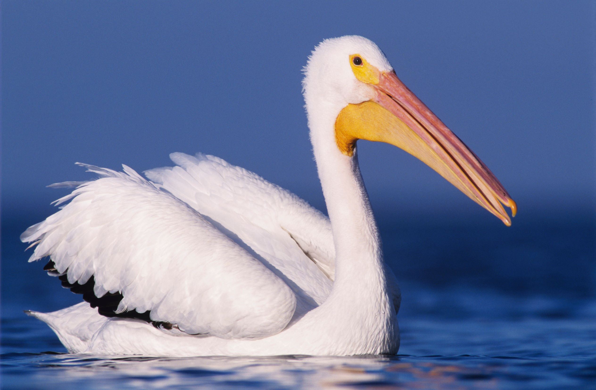

Scientific name: Pelecanus
Location/Environment: Pelicans thrive on the coast, around beaches and lagoons.
Lifespan: They live around 15 to 25 years in the wild.
Location/Environment: Pelicans thrive on the coast, around beaches and lagoons.
Lifespan: They live around 15 to 25 years in the wild.
Diet: Pelicans mainly stick to a diet of fish, however, they sometimes will snack on other animals found in or near the water like crustaceans, turtles, and insects.
Differences between sexes and ages: There are not many differences between male and female pelicans other than the females being a bit smaller, and the males having a longer beak.
Fun facts: Pelicans have an extendable sac of skin at the base of their throat, called the gular pouch, that can hold up to 3 gallons of water.
Differences between sexes and ages: There are not many differences between male and female pelicans other than the females being a bit smaller, and the males having a longer beak.
Fun facts: Pelicans have an extendable sac of skin at the base of their throat, called the gular pouch, that can hold up to 3 gallons of water.
Differentiate from others: Pelican family is 30 million years old.
Folklore: There is a long running myth stating that the pelican stabs its own chest with its beak and feeds its blood to its young. Because of this, the pelican is frequently found in Christian art as a symbol of Christ sacrificing himself.
Personal opinions: I really like pelicans because they are such interesting birds that have been around for millions of years, and are the only bird that can store that much liquid in their gular pouch.
Folklore: There is a long running myth stating that the pelican stabs its own chest with its beak and feeds its blood to its young. Because of this, the pelican is frequently found in Christian art as a symbol of Christ sacrificing himself.
Personal opinions: I really like pelicans because they are such interesting birds that have been around for millions of years, and are the only bird that can store that much liquid in their gular pouch.